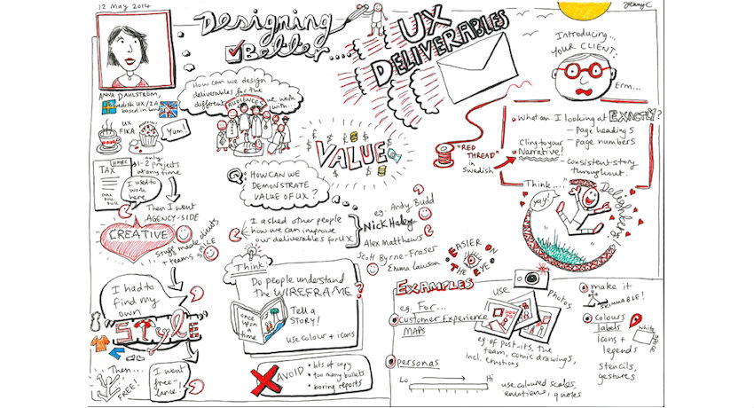

Usability Testing
in Technical Writing Environments. EngCmp1430, Tuesdays 6:00pm - 8:30pm, Spring 2022
Counts towards GER, PPW, and DNID requirements
Did you watch High Score on Netflix?
If so, then you understand how important usability studies are to product design and marketing. If you didn't, well, every episode of High Score details how companies work to establish who their audience is, what they want, and how they will use a given product? Sometimes these questions aren't asked in this order, but at some point, these questions must get asked. Like in episode 2, when Nintendo almost flopped their US release...and they totally would have...had someone not been doing their research.
Usability Testing is Fundamental to ALL Aspects of Product Design
That's right. Any user product, from durable goods to software to online services...even packaging and advertising, go through some kind of testing. In Usability Testing ENGCMP1430 we'll learn the basics of UX (user experience) research by first thinking about user personas and scenarios, then practicing methods for conducting usability studies learning about tools we can use to gather data, and finally thinking about how we might best communicate our findings and data to clients. Along the way, we'll be learning and applying theories of information design and human factors to inform our thinking.

If you intend to go into any kind of product development, then you'll need these research skills. Do you know who else needs these skills? Employers. Do a search for UX jobs and UX research jobs right now and you'll find that Google, Uber, and Facebook to name a few, are all looking for can-do employees trained in this field. You'll also find scores of other companies who need people like the one you're working to become here at Pitt.
Check out Google's Usability Study Project: Next Billion Users HERE or the 99% invisible podcast profile HERE

Sign Up Now!
Here is what students say about this course:
- I loved that the class was very practical and project–oriented. It made me feel like I was effectively applying what I was learning instead of just doing busy work.
- I liked how this class was very hands–on. I learned the most while working with a real client.
- Steve is one of the few professors who I felt actually took the time to read an entire paper and provide concrete, in–line edits. That was really helpful for me in terms of improving technical writing practices.
Please email Stephen Quigley at sjq4@pitt.edu with any questions. Learn about me and my research HERE
generated by Pitt Fuego
Why make a spark when you can light a fire?
Find out more HERE